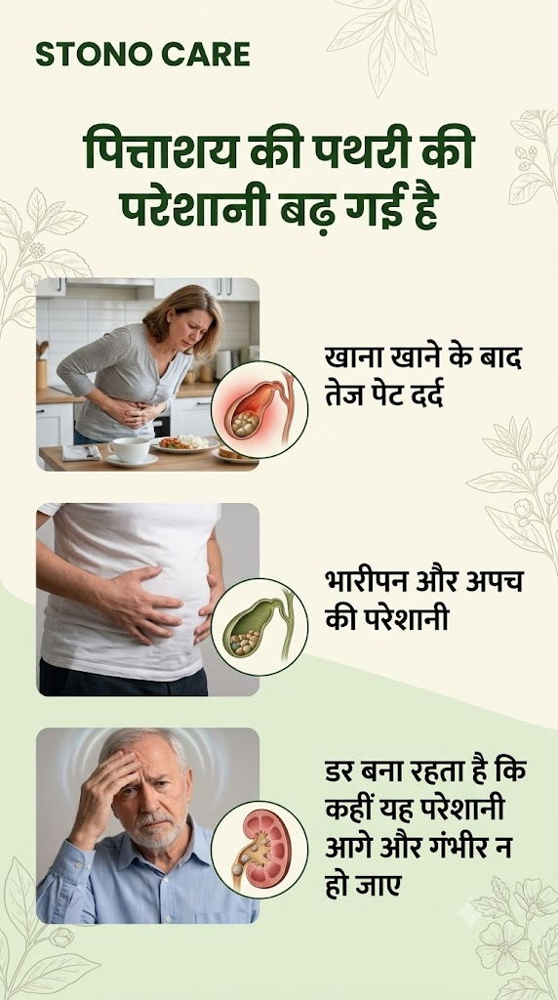
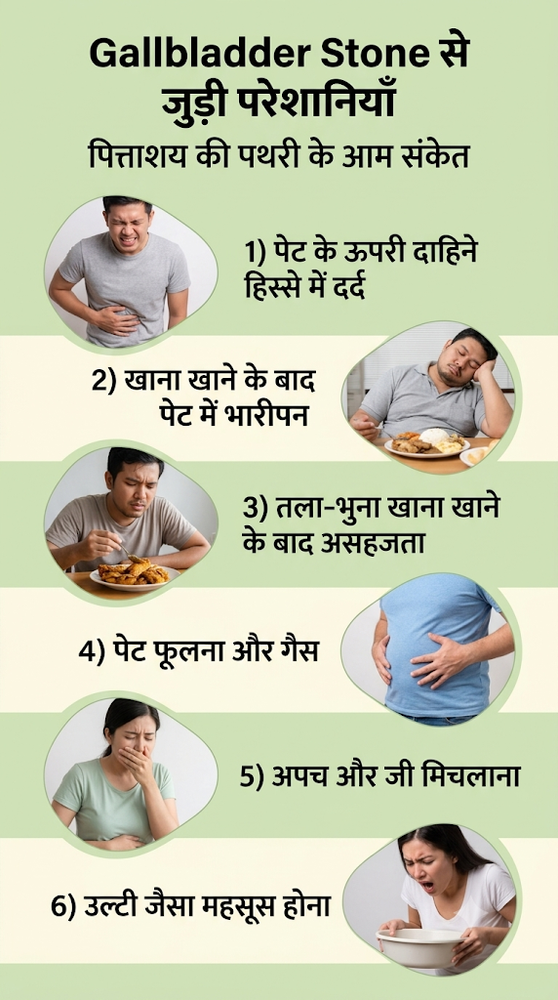
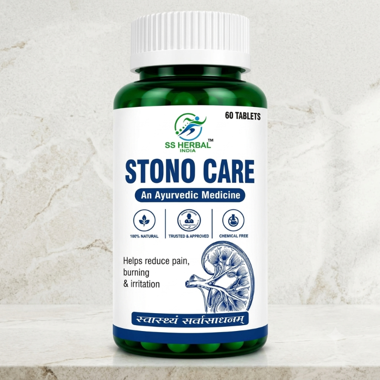
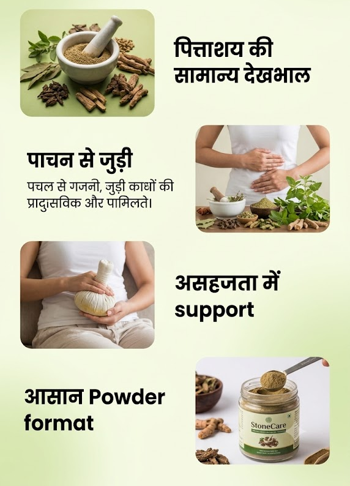
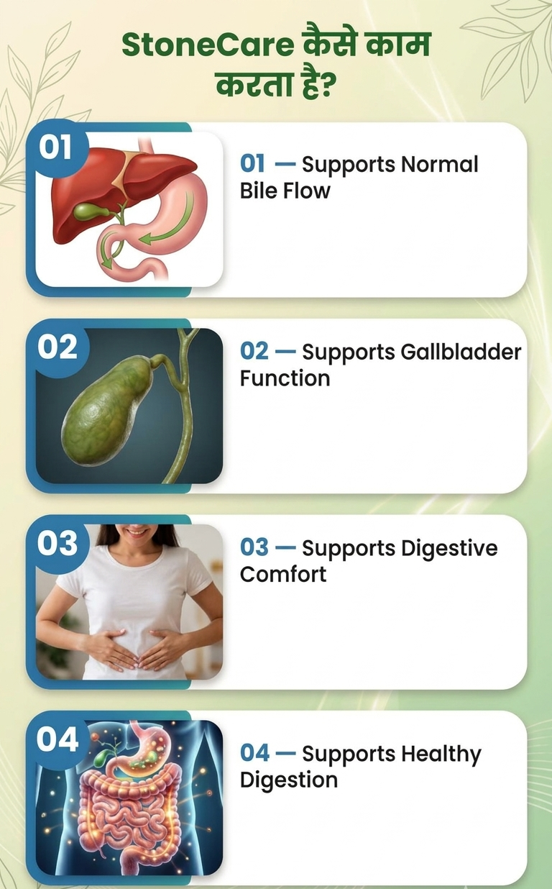
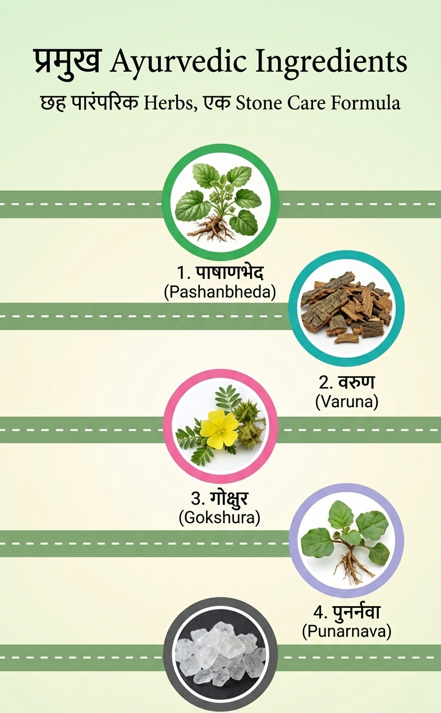
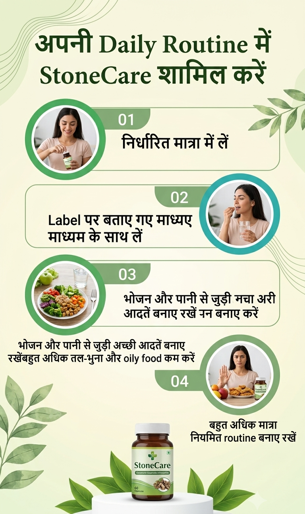
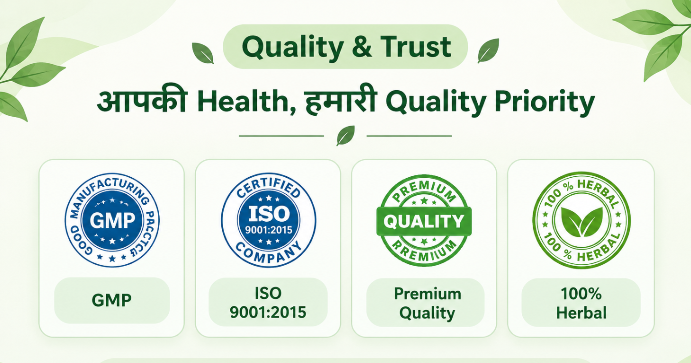
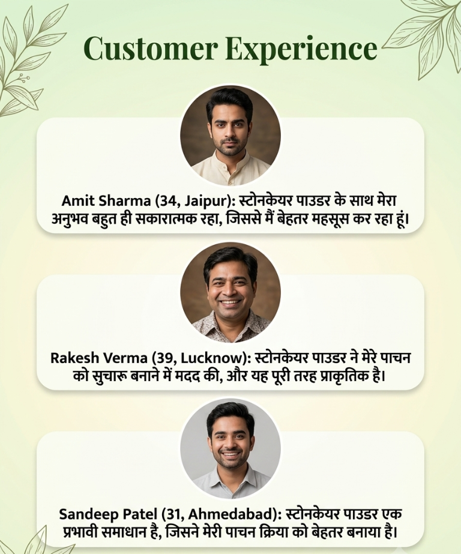

क्या आप भी महसूस करते हैं?
शरीर के इन संकेतों को
नज़रअंदाज़ न करें

खाना खाने के बाद
भारीपन और अपच
की परेशानी
डर बना रहता है कि
परेशानी गंभीर न हो जाए
मिलिए StoneCare पाउडर से






SPECIAL OFFER
Gallbladder Stone Care की अपनी
Routine आज से शुरू करें
StoneCare को सही diet और healthy lifestyle के साथ अपनी daily routine में शामिल करें।
- Free Delivery
- Cash on Delivery Available
- Secure Ordering
- Quality-Focused Formula
- Genuine SS Herbal Product
आज ही शुरुआत करें
आपकी बेहतर सेहत का
पहला कदम यहीं से
अपनी जानकारी भरें। हमारी wellness team आपसे जल्द संपर्क करेगी।

FAQ
अक्सर पूछे जाने वाले सवाल
StoneCare क्या है?
StoneCare एक Ayurvedic herbal formulation है, जिसे Gallbladder और digestive system की सामान्य देखभाल के लिए तैयार किया गया है।
StoneCare किसके लिए उपयोगी है?
यह adults के लिए Gallbladder और digestive care support के उद्देश्य से तैयार किया गया है। उपयोग से पहले product label पढ़ें।
क्या StoneCare पित्ताशय की पथरी को खत्म करता है?
नहीं। StoneCare पित्ताशय की पथरी या किसी अन्य medical condition का diagnosis, treatment या cure नहीं करता।
Gallbladder Stone के आम लक्षण क्या हैं?
पेट के ऊपरी दाहिने हिस्से में दर्द, भोजन के बाद भारीपन, पेट फूलना, अपच, जी मिचलाना और उल्टी जैसे लक्षण दिखाई दे सकते हैं।
क्या StoneCare को अन्य medicines के साथ लिया जा सकता है?
यदि आप कोई medicine ले रहे हैं या किसी health condition का management कर रहे हैं, तो उपयोग से पहले doctor से सलाह लें।
Disclaimer
StoneCare एक Ayurvedic herbal product है। यह gallstones, gallbladder inflammation, bile duct blockage, digestive disease या किसी अन्य medical condition का diagnosis, treatment, cure या prevention नहीं करता।